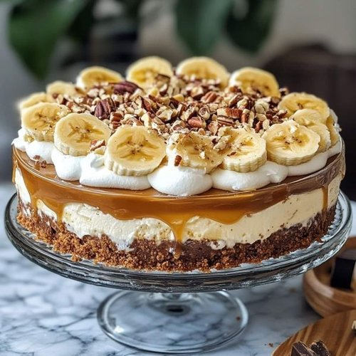
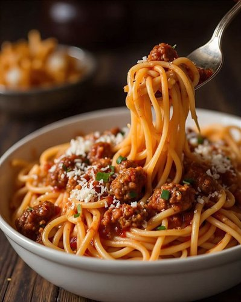

Receitas dos Borges


Receitas dos Borges
Um site desenvolvido para reunir receitas da família Borges em um só lugar, transformando receitas do dia a dia em uma experiência simples e organizada.
- Organização das receitas por categorias
- Pesquisa de receitas
- Cards de receitas com botão para ver ingredientes
- Interação em JavaScript
- Layout responsivo